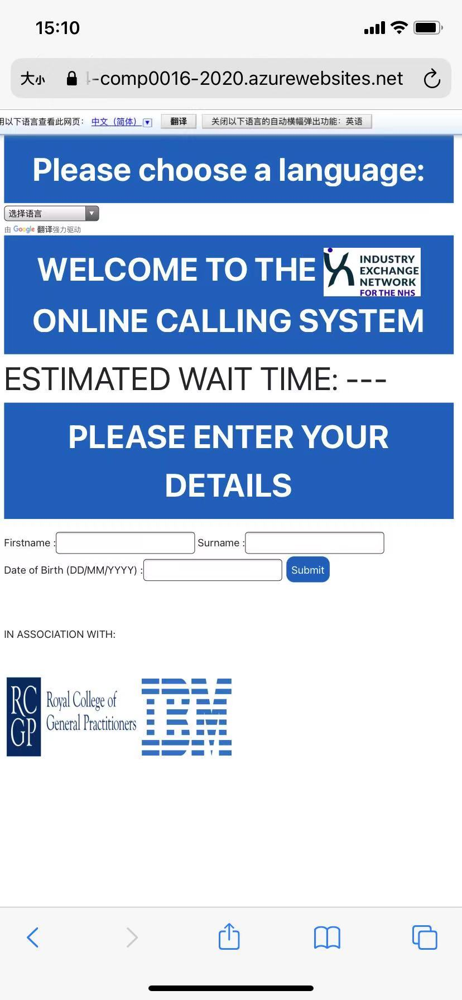
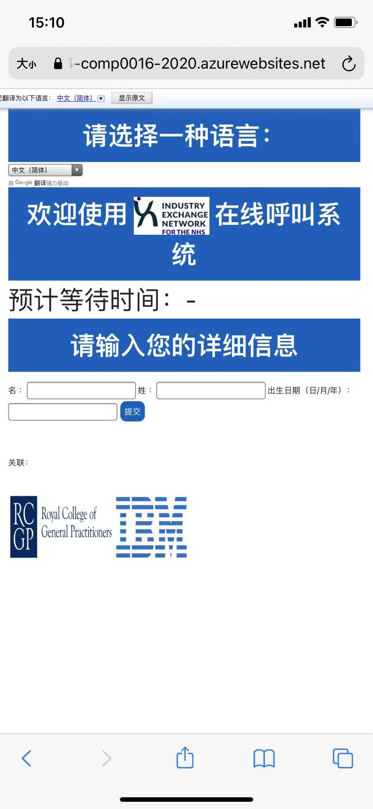
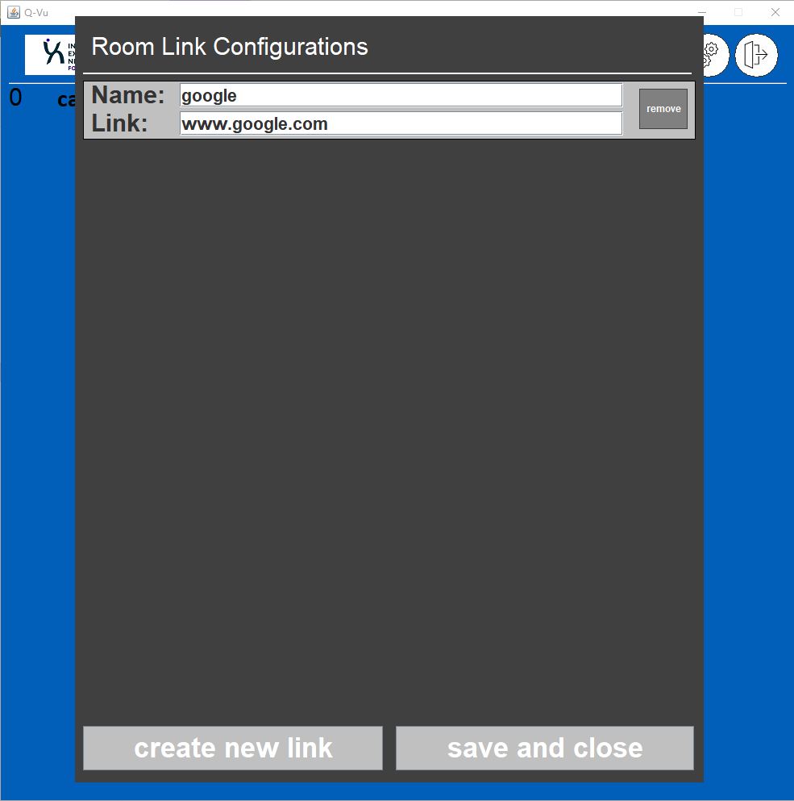

User Interface Design
The user interface in this program is divided into two parts:
UI for callers
UI for receptionists
User Interface for callers
Design principles
Considering the callers might not be familiar with the browser or how to use a website, we decided to make the UI simple and easy to use. This means we only keep the essential functions in the web pages and use a precise and efficient user interface.
Sketches
The callers are expected to visit the website using their mobile devices(though visit the website using computers does not affect their experience), the sketches are shown below:
The first page is where the user input their personal details, and after doing so, the second page is what the caller sees when he waits in a queue.
Final user interface in use
The first warning page shown to the user:
The page where caller inputs personal details:

The pages can be displayed in another language(For example Chinese):

After the caller hits submit, he is brought to the waiting page where he can see his position in the queue and estimated waiting time. By entering descriptions and hitting submit, his issues can be viewed by the receptionists.
When the receptionist has sent the caller a link, the caller shall see a page like this:
By clicking the button, he is brought to a Teams room with a nurse/gp/pharmacist etc.
INSERT IMAGE [callerui5.jpg]
User Interface for receptionists
Design principles
The application should be able to achieve all the functions specified in the requirements. The user interface should allow the receptionists to view the information of callers clearly and handle them effectively. So, the design of UI aims at clarity and efficiency.
Sketches
This is the page where receptionists can see and handle all the callers
Final user interface in use
The login screen of the receptionist.
After logging in, the receptionist set the links of the Teams rooms here.

This is the main page where the receptionist views and manages all callers.